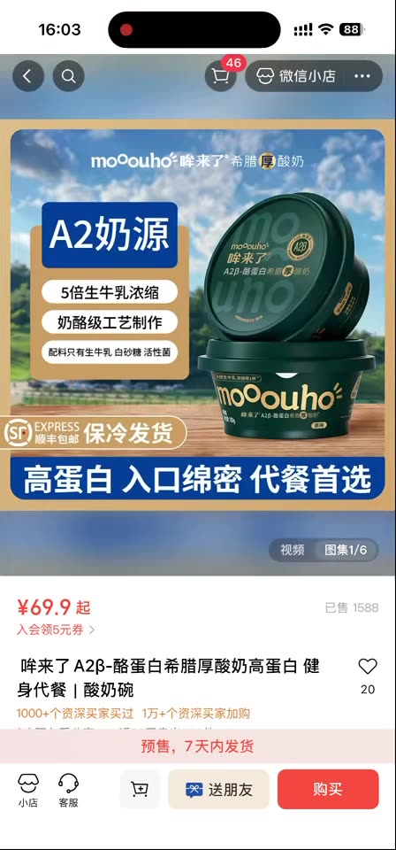
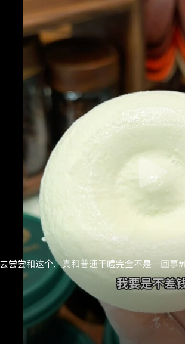

CASE · 食品饮料 · 视频号 ADQ 起量
哞来了 · 莨辰 高端酸奶 KOC 达人短视频爆量密码
三步走策略：选对品 + 打磨爆款内容脚本 + ADQ 加热放大 → 🎉冷启首日 GMV 20w+🎉
🥛 高端希腊厚酸奶，在视频号找到了愿为品质买单的人群；
团长× KOC 打磨出「先抑后扬」爆款短视频脚本，配合 ADQ 加热放大爆单。
选品洞察：好品 + 对的人群 + 对的平台
/ PRODUCT & AUDIENCE FIT
为什么这个品「选对了」
哞来了主打 A2β-酪蛋白 · 5 倍生牛乳浓缩的高端希腊厚酸奶，客单价 69.9 元起，属于典型高价值、强卖点、需要被"讲清楚"的品。这类品在泛流量平台容易因"太贵"被划走，关键不在压价，而在找到愿意为品质付费的人。
- 差异化清晰：A2 奶源 / 干噎吃法（猎奇）/ 高蛋白，天然自带话题
- 高客单撑得起投放：单量不大也能跑出可观 GMV 与日耗
- 经平台适配验证，最终锚定视频号生态——在这里找到了对的人
对的人群：高价值决策圈层
文案主动筛选"不差钱的宝子"——把"贵"变成人群筛选器，而非劝退点。视频号生态精准触达了这批人：
内容力协作机制：三方分工，把卖点做成爆款
/ CONTENT COLLABORATION
🏷️
品牌方
提供产品卖点
输出 A2 奶源、5 倍浓缩、高蛋白、代餐/补蛋白场景等核心卖点与卖点素材。
→
🎬
合作机构
组织达人·出脚本·拍摄
机构统筹达人资源，负责脚本创作与视频拍摄，把品牌卖点翻译成有传播力的内容。
内容供给：莨辰
→
📱
KOC 达人
真实种草·输出内容
以真实测评口吻发布短视频，用"朋友安利"的信任感完成种草。
爆款短视频拆解：一条「先抑后扬」的高转发视频
/ VIRAL SCRIPT BREAKDOWN

"贵是真贵，但好吃也是真的好吃，不差钱的宝子快去尝尝……我要是不差钱" —— 转发是点赞的 2.6 倍，典型社交货币型爆款。
🔥 核心信号：转发(1024) 远超点赞(392)。用户看完第一反应是"发给谁去尝尝"，说明内容自传播力极强——这正是 ADQ 加热能高效放大的优质素材。
1黄金 3 秒钩子
先自曝"贵"降防御，再强背书"真好吃"拉认同，"和普通干噎完全不一样"制造好奇，不像广告像真安利。
可复制：开头 3 秒先抛"缺点+反转"，比直接讲卖点更抓人。
2脚本结构
自曝价格 → 强调口感 → 对比普通款立差异 → "不差钱去尝尝"软性号召，全程无硬广感。
可复制：四段式脚本模板，KOC 换品即可套用。
3人群筛选器
"不差钱的宝子"主动筛人——把"贵"变成精准圈层的筛选器，而不是劝退理由。
可复制：用一句话锁定高价值人群，配合 ADQ 定向放大更精准。
4金句催转发
结尾字幕 "我要是不差钱"反差自嘲成为记忆点，直接催化高转发——可复制的"结尾埋梗"打法。
可复制：每条视频结尾埋 1 句"金句梗"，专门催转发、造社交货币。
商详转化力：视频负责拉人，详情页负责临门一脚
/ DETAIL PAGE CONVERSION
详情页 = 高转化的隐形推手
短视频把"贵但值"种进心里，商详则用科学数据 + 强对比完成临门一脚，把"贵"逐条讲透、化解价格异议。
首屏价值主张
为什么贵(A2·5倍浓缩)
吸收力可视化
vs普通酸奶对比
营养成分表
高端商超/权威背书
3 个转化亮点
① 把"贵"讲透：A2 奶源+5 倍浓缩+奶酪级工艺，价格异议逐一化解；② 数据可视化：92.8% 消化率、蛋白粒径对比，打动高知决策人群；③ 强对比锚定高端：逐项碾压普通希腊酸奶，让"贵"理所当然。
起量三步链路：选对品 → 打磨爆款脚本 → ADQ 加热放大
/ THREE-STEP PATH
选高价值、强卖点、有话题的品，匹配视频号节点与人群调性——高端酸奶在这里能找到愿为品质付费的人。
- 品类特征：A2 高端希腊厚酸奶 · 客单 69.9 起
- 人群匹配：代餐控 / 精致宝妈 / 品质长辈
- 话题点：干噎吃法猎奇 · 接近母乳蛋白
- 平台锚定：视频号找到对的人群
→
借助团长机构组织达人批量产出，素材量足够多、够丰富，脚本紧扣人群诉求，跑出高转发爆款。
- 组织方式：团长机构统筹达人矩阵
- 脚本框架：先抑后扬「贵但值」
- 匹配诉求：代餐/补蛋白 场景切入
- 爆款信号：单条转发 1024（＞点赞）
→
用 ADQ 加热优质素材——最大流量池、稳定性强、天花板高，专业投放工具与报表支撑放量。
- 流量池：最大流量池 · 量大天花板高
- 稳定性：投放稳定 · 可持续放量
- 工具力：专业化投放工具与数据报表
- 放量结果：单日日耗 16w+ · 冷启首日 GMV 20w+
🚀 可复制方法论：视频号 + ADQ 的起量确定性
面向客户 / 机构 / 团长 / KOC —— 这套打法可复制，视频号与 ADQ 值得投入
选品
匹配视频号节点与人群
优先选高价值、强卖点、有话题的品，把"贵"转化为人群筛选器；在视频号找到愿为品质买单的对的人。
内容
素材要足够多且丰富
借助团长机构规模化产出素材；脚本要匹配人群诉求，善用"先抑后扬 + 结尾埋梗"催化转发与种草。
投放
一定要用 ADQ
ADQ 拥有最大流量池、强稳定性、高天花板，配合专业投放工具与报表，是把爆款素材放量的确定性抓手。